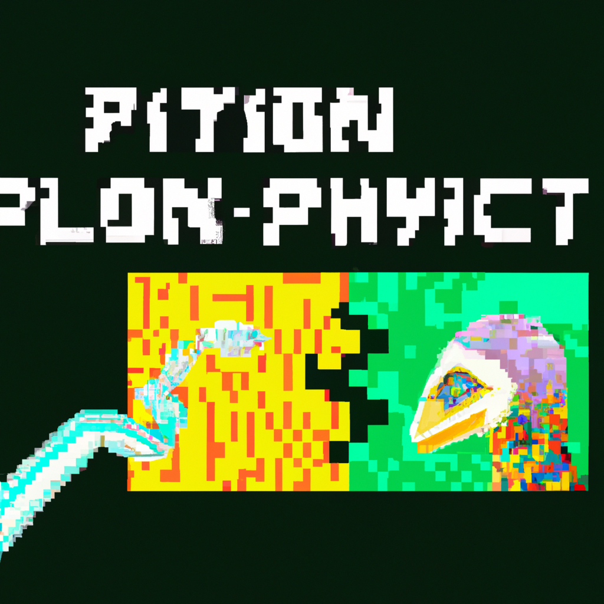

The future of Python and AI
The future of Python and AI is an exciting one. With the advent of machine learning, AI-driven applications are becoming increasingly more common. Python is a great language for developers to use for developing AI-driven applications. With its easy-to-understand syntax, Python makes it easy to develop AI applications quickly.
Python has a wide array of libraries and frameworks available for developers to use. These libraries and frameworks make it easy to develop complex applications, such as recommendation engines, natural language processing applications, and computer vision applications.
Python is also great for developing applications that involve deep learning. Deep learning is a subset of machine learning that focuses on the development of neural networks. Neural networks are powerful models that are capable of learning complex tasks that would otherwise be too difficult for traditional machine learning algorithms.
Python is also great for data analysis. With its wide array of libraries and frameworks, it is easy to create visualizations of data or to create predictive models. Data analysis is essential for businesses to make informed decisions.
Python is not only great for developing AI applications, but it also has a wide range of use cases. From web development to data science, Python is a great language to use for any type of application.
The future of Python and AI is a bright one. With its easy-to-understand syntax and wide array of libraries and frameworks, Python is well-equipped to develop powerful and complex AI applications. With continued development and improved tools, Python will continue to be a great language for developers to use for developing AI applications.